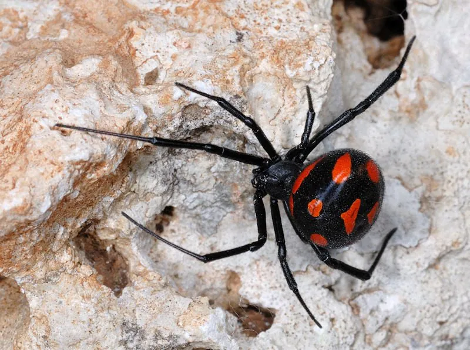

蛛形动物 · 动物界
间斑寇蛛 Latrodectus tredecimguttatus

分布于中国新疆等地的寇蛛，腹部带红斑，毒性较强，被咬后可出现剧痛与肌肉痉挛，需避免接触并及时就医。
- 分类
- 门节肢动物门纲蛛形纲目蜘蛛目科球蛛科属寇蛛属
- 栖息环境
- 干旱荒漠、草原、农田边缘的石块下、灌木根部和土缝
- 地理分布
- 地中海沿岸、中亚及中国新疆的干旱地区
- 保护级别
- IUCN 暂无评估；中国未列入国家重点保护名录
物种志
间斑寇蛛雌蛛体长 10–15 毫米，雄蛛仅 4–7 毫米，足展约 3–4 厘米。雌蛛体色多为黑色发亮，腹部球形，背面常有 13 个左右红色或橙黄色斑点，“间斑”之名由此而来；雄蛛体色较浅，斑纹更明显。它结不规则的乱网，隐藏在地面石块、灌木根部和土缝中，夜间捕食昆虫和其他小型节肢动物。
它分布于地中海沿岸、中亚以及中国新疆等地，栖息于干旱的荒漠、草原与农田边缘。交配后雌蛛产下数个卵囊，每个卵囊含 100–400 枚卵，母蛛会守护卵囊一段时间，幼蛛孵化后先聚集再扩散。间斑寇蛛毒性较强，毒液含神经毒素，被咬后局部疼痛并向周围扩散，可能伴随肌肉痉挛、出汗等症状，需避免接触并及时就医；在中国它不属于国家重点保护动物，但野外遇到应绕行，不要徒手捕捉。
形态与习性
- 食性昆虫和其他小型节肢动物
- 体长雌蛛 10–15 mm，雄蛛 4–7 mm
- 寿命雌蛛约 1–3 年
- 繁殖卵生，每卵囊 100–400 枚，母蛛护卵
- 活动节律夜间活动，白天藏在乱网附近
- 毒性毒性较强，含神经毒素，被咬须避免接触并及时就医
- 特征腹部常有约 13 个红色斑点
趣味知识
- 间斑寇蛛腹部通常有 13 个左右的红色斑点，是它区别于其他寇蛛的特征。
- 雌蛛体型远大于雄蛛，交配后雄蛛常被雌蛛吃掉，“黑寡妇”之名由此而来。
- 它的毒液属于神经毒素，被咬后可能引起肌肉痉挛，需尽快就医。